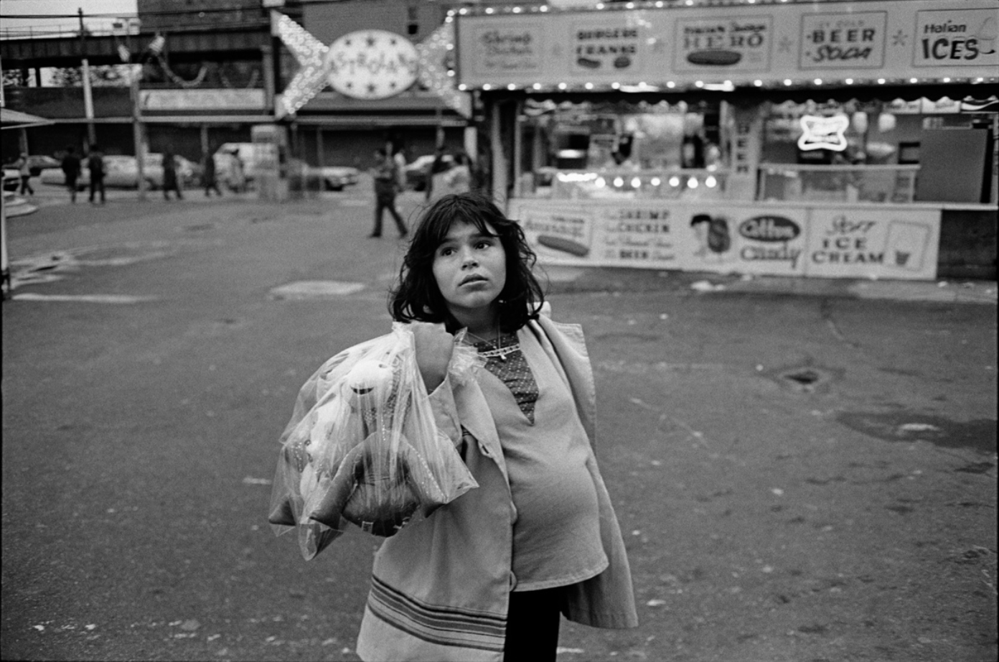
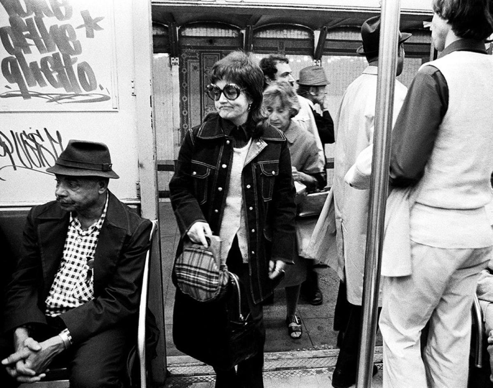
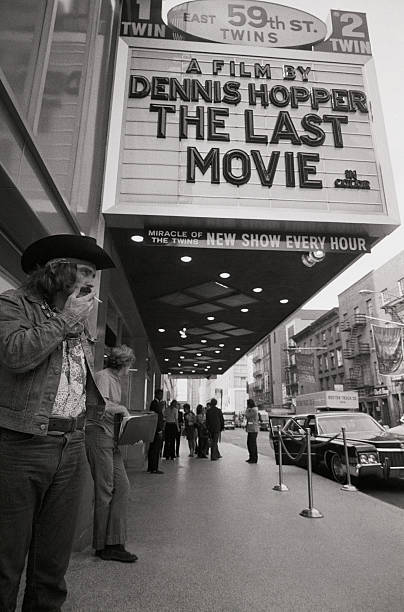

Late 70s subway
Late 70s subway

Stars of the Topless Go Go

She’s a rebel.

Jerry Schatzberg Jazz Drummer and Band Leader Chico Hamilton, New York City 1962
“I don’t dig staying in one groove.” Chico Hamilton

Amen Corner Sisters (Harlem, New York), Ming Smith, 1976

Mary Ellen Mark Jeanette at a Carnival, Brooklyn, New York 1978

Coney Island station, 1981
CC Train at the Rockaway Park Station in Queens, 1977
Anthony Barboza (American, b. 1944)
Harlem, New York, 1968
Gelatin silver print
via @joeinct
They shoot horses, don’t they? Times Square, 1970

Skating at Rockefeller Center, 1970
NYC under construction, 1970
Gloria Pizza, Main Street, Flushing, late 70s.

Pretty smile; bombed car

What we used to do when our TV broke in the 1970s

Janis Joplin outside the Hotel Chelsea, 1969

Old skool Kase

Paradise in Times Square, 1970s.
Katz’s Deli, 1989
Complicated hair outside the NY Public Library, 1967
In 1933, the first blow-up sex doll made an appearance at the Thanksgiving parade.
Plato’s Retreat, 1980. A sex club on the upper west side.

Safety first. Thanksgiving parade, 1975.
Thanksgiving, 1973
Waiting for the parade, 1974

Underdog getting ready to fly on 77th Street, 1980s
Heroin Kills, Zephyr and Dondi in the Bronx, 1981

Looking over the upper west side, 1976
Early graffiti in motion, 1973
The arch, 1974

Stan Wayman Last Stop, New York City Subway 1958

Not a single smile.
The Jazz Bus at Valentine Avenue near Fordham Road in The Bronx, 1973
Union Street Luncheonette in Brooklyn, 1970s
 Dennis Hopper. The Last Movie.
6th Avenue, 1982

6th Avenue, 1978

Needs a little work.
Strike a pose. Riverside Park, 1985.
The Last Look. NYC, 1980
Photo: Jamel Shabazz
Stores on Canal Street, 1979

Nuns outside Bon Soir, 8th Street, 1960.

Subway scene
7th Ave near 53rd St, 1986
Bowery at Grand Street looking south towards Hester St, 1971

Ah, the homeless game. How close are you willing to sit to the unfortunate soul?
34th and 3rd, 1981

Bowie outside the Carlyle, 1983

East 137th and Lincoln Ave, South Bronx, 1972